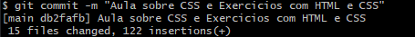

Antes de tudo, precisamos criar o nosso repositório no github.com com nossa conta (é necessário criar uma conta, caso não tenha). Após termos nosso repositório criado, iremos acessar pelo link que está no botão "Code", como mostrado abaixo.

Após isso, faremos a instalação do gitbash e utilizaremos ele para receber e enviar os arquivos que produzimos no repositório.
Após já ter instalado o Gitbash em seu computador, clique com o botão direito e aparecerá a opção chamada "Gitbash here"
Em sequência, faremos a configuração inicial acessando o link de nosso repositório e utilizando os seguintes comandos:

Após isso, utilizaremos o comando "git clone e colaremos o link de nosso repositório.

Após isso, será criada uma pasta no local aonde abrimos o git bash.
Nesta pasta poderemos usar para guardar nossas páginas html, junto com os estilos css e imagens que forem utilizadas.
Para verificar os arquivos que há na pasta, como arquivos novos e atualizações, podemos utilizar o comando 'git status'.
Quando há novos arquivos e queremos fazer o envio para o repositório, há 3 comandos para proceder. Um deles é o 'git add', a qual é incluido os itens novos no pacote para envio.
O git commit -m "Insira uma observação", serve para endereçar e botar observações sobre o arquivo.
Após isso e verificar com 'git status', é possível fazer o envio com o comando 'git push'.